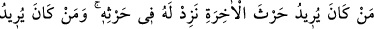
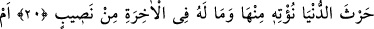
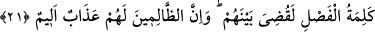
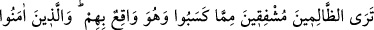
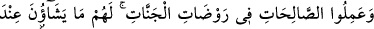
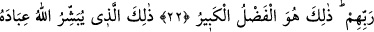
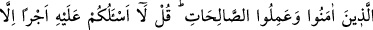
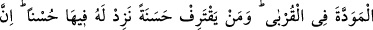
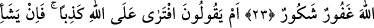
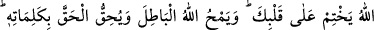
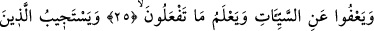
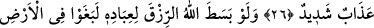
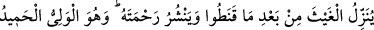
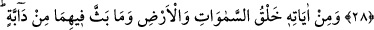
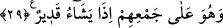
O,
RIZKI DİLEDİĞİ ÖLÇÜDE
İNDİRİR
20. Kim âhiret kazancını istiyorsa, onun kazancını arttırırız. Kim de dünya kârını
istiyorsa ona da dünyadan bir şeyler veririz. Fakat onun âhirette bir nasibi olmaz.
21. Yoksa onların, Allah’ın izin vermediği bir dîni getiren ortakları mı var? Eğer
erteleme sözü olmasaydı, derhal aralarında hüküm verilirdi. Şüphesiz zalimlere